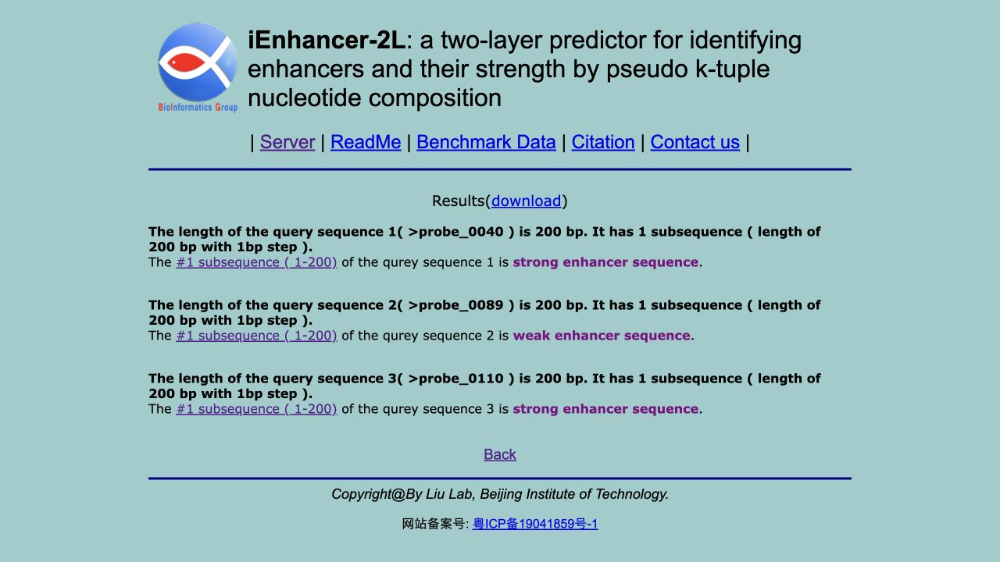
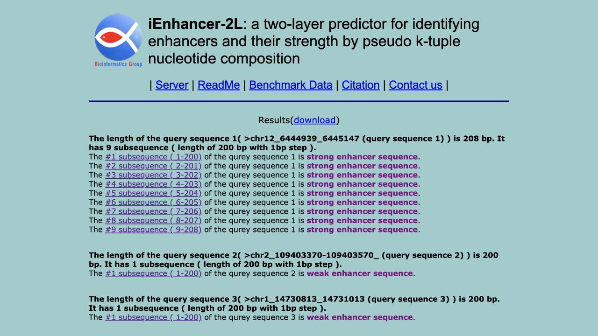

How to read the results
The same benchmark, with related sequences kept together
The original data contain 2,968 sequences: 742 strong enhancers, 742 weak enhancers and 1,484 non-enhancers. Related sequences were assigned to 2,451 groups that stayed together across five outer evaluation folds. Model selection used training data within each fold.
The separate historical 400-record test contains 100 exact training overlaps and was excluded from these evaluations. The comparisons below reuse the grouped benchmark, so they are exploratory rather than new independent confirmations. A reported uncertainty interval describes its stated analysis; it does not remove the limits of reused data.
Full evaluation design → · Original papers, data and author-code availability →
Our first grouped results · 13 October 2026
Both classifiers trained and evaluated
Each record was predicted by an outer-fold model that excluded its group from fitting and tuning. These are means across five outer folds, using the predefined primary feature interpretation.
| Task | Held-out records | Accuracy | MCC | ROC AUC |
|---|---|---|---|---|
| Enhancer / non-enhancer | 2,968 | 76.21% | 0.527 | 0.841 |
| Strong / weak, known enhancers | 1,484 | 60.98% | 0.220 | 0.668 |
Conditional 95% intervals for mean accuracy are 74.64–77.90% and 58.38–63.73%, respectively, from 1,000 whole-group bootstrap resamples within folds. These intervals keep the fitted models and folds fixed. ROC AUC is averaged over within-fold rankings; scores from different models are not ranked together.
Interpretation: identification performs better than strength classification in this benchmark. The second result evaluates known enhancers, not the accuracy of the complete two-stage cascade. Numerical proximity to the paper’s results does not prove reproduction: the evaluation design and unresolved implementation choices differ. No experimental-transfer result is available.
The final full-data models use C=32768, gamma=0.0078125 for layer I and C=2048, gamma=2 for layer II. Layer I reaches the C search boundary; this limitation is retained without extending the grid after reviewing the outer results. Decision scores are not probabilities or measured activity.
Full results and provenance · Layer I held-out predictions · Layer II held-out predictions
Author-server comparison · 19 October 2026
192 of 200 predictions agree; eight differ
On a fixed set of 200 new 200-base sequences, the deployed iEnhancer-2L server and our saved models gave the same final class in 192 cases (96%). The eight differences show that our reconstruction does not match the server on every tested input.
Reference tool: open the authors’ iEnhancer-2L server ↗ · usage instructions ↗ · Tool documentation and its role in our reconstruction →
The sequences come from the lentiMPRA library design, Table S10 of Agarwal, Inoue et al. (Nature, 2025). Selection and exclusion rules were fixed before obtaining predictions. No models were retrained, and no parameters or thresholds were adjusted to improve agreement.
| Server / our class | Strong | Weak | Non-enhancer |
|---|---|---|---|
| Strong | 78 | 3 | 2 |
| Weak | 0 | 70 | 3 |
| Non-enhancer | 0 | 0 | 44 |
The authors’ response, beside our predictions
This screenshot shows three sequences where the results differ: a strong/weak change and two kinds of disagreement about whether a sequence is an enhancer. The identifiers connect the screenshot to the comparison table.

| Sequence | Authors’ server | Our reconstruction |
|---|---|---|
probe_0040 | Strong enhancer | Weak enhancer |
probe_0089 | Weak enhancer | Non-enhancer |
probe_0110 | Strong enhancer | Non-enhancer |
96% agreement does not mean 96% biological accuracy. No experimental activity was used as a correct answer in this comparison. These results check agreement with the deployed server, not the paper’s published evaluation or performance in the three cell types. The differences also cannot establish which model is biologically correct.
All eight disagreements
| Sequence | Authors’ server | Our reconstruction |
|---|---|---|
probe_0040 | Strong enhancer | Weak enhancer |
probe_0089 | Weak enhancer | Non-enhancer |
probe_0108 | Strong enhancer | Weak enhancer |
probe_0110 | Strong enhancer | Non-enhancer |
probe_0133 | Strong enhancer | Non-enhancer |
probe_0135 | Weak enhancer | Non-enhancer |
probe_0147 | Strong enhancer | Weak enhancer |
probe_0177 | Weak enhancer | Non-enhancer |
Three differences concern strong versus weak classification; five concern enhancer versus non-enhancer identification. Identification-only agreement is 195/200; the primary final-class result remains 192/200.
Selection, separation from training, and downloadable evidence
The 15-base adapters were removed from both ends of each 230-base element. Only usable 200-base hg19 intervals annotated in S10 were eligible. The sample contains 185 HepG2 candidate enhancers and 15 promoters; it does not represent all library categories or a comparison across HepG2, K562, and WTC11.
Against all 2,968 known training sequences, there are no exact or reverse-complement matches and no pairs within 40 edits in either orientation. The observed minimum is 55 edits; the minimum annotated training-locus separation is 10,823 bases. Similarity and proximity exclusions also applied within the sample.
These finite rules do not certify complete biological independence. Coordinates are used as annotated in S10, without a fresh genome check, and the server’s complete training history is not public. Each of the 200 returned sequences was verified base-for-base and by identifier; both model hashes remained unchanged. The server supplies classes, not comparable numerical decision scores.
All 200 comparisons and local scores (CSV) · Eight disagreements (CSV) · 200 inputs (FASTA)
Rules fixed before predictions · Separation checks (CSV) · Results, hashes, and provenance (JSON)
Original server responses, four batches of 50: 1 · 2 · 3 · 4. Illustrated replay: three inputs and returned response.
Replay the local predictions →. Machine-readable files retain English field names.
Author-server agreement check · 19 October 2026
Our predictions match the author’s examples
The live iEnhancer-2L server and our saved reconstruction gave the same final label for all 13 tested windows from its five example sequences. Matching the examples is a useful check, but does not prove complete reproduction.
We selected Example on the author’s server and submitted its unchanged public sequences. The first query is 208 bases long, so the server evaluates nine overlapping 200-base windows, moving one base at a time. Each of the other four queries is 200 bases long and produces one window. Our code evaluated those exact same windows.

| Example | Windows | Author’s server | Our reconstruction |
|---|---|---|---|
| 1 | 9 | All strong enhancers | All strong enhancers |
| 2 | 1 | Weak enhancer | Weak enhancer |
| 3 | 1 | Weak enhancer | Weak enhancer |
| 4 | 1 | Non-enhancer | Non-enhancer |
| 5 | 1 | Non-enhancer | Non-enhancer |
What this supports: the reconstructed two-stage classifier agrees with the deployed server on these demonstration inputs. The existing final models were used, with no retraining, parameter tuning, or feature-choice selection for this check.
Matching the examples does not prove complete reproduction. These are five examples selected by the authors; nine windows come from the same sequence and overlap heavily. Four of the 13 windows also exactly match our training sequences. This is therefore not an independent performance test and must not be reported as 100% predictive accuracy.
The returned server file contains class labels, not numerical decision scores or feature vectors. Matching labels cannot establish identical feature calculations, SVM settings, or the original leave-one-out evaluation. Exact reproduction of the paper’s reported results remains unresolved. How reproduction is assessed →
How the comparison was checked, and downloadable evidence
- Saved the server’s actual returned result file and its public example sequences. Verified the input against the site’s Example script.
- Matched every returned window base-for-base and by query, start, and end coordinates.
- Verified the two saved model files against the recorded training-audit hashes, then ran the same 200-base windows through our existing prediction code.
- Compared all 13 final labels and screened exact/reverse-complement matches to the training FASTA files. The exact overlaps are the first window of example 1 and examples 3, 4, and 5. No reverse-complement training matches were found; this limited screen does not certify biological independence.
Per-window comparison and local scores (CSV) · Counts, model hashes, and provenance (JSON) · Author’s returned predictions (TXT)
Five original queries (FASTA) · 13 matched windows (FASTA) · Replay these windows with our saved models →
The files retain English machine-readable field names and include local decision scores only. The check concerns agreement with the server, not measured enhancer activity or the planned lentiMPRA comparison.
Baseline comparisons · explained 14 October 2026
What the DNA-word comparison tells us
Counting short DNA words was competitive with the reconstructed iEnhancer-2L features. For distinguishing strong from weak enhancers, ordinary 6-mers had the higher observed accuracy. That is a useful lead for the next experiment, rather than an explanation of the biology.
What each model reads
A 6-mer is a six-letter DNA word. Sliding a six-letter window along ACGTACGT produces ACGTAC, CGTACG, and GTACGT. Each 200-base sequence contains 195 such overlapping windows. The ordinary representation records the frequencies of all 4,096 possible words.
PseKNC, the paper’s feature representation, combines those word frequencies with nine summaries derived from DNA structural-property tables. It also rescales both parts using a factor that depends on the sequence. Both approaches use the same type of SVM classifier. The simpler representation has 4,096 features instead of 4,105; it is not a radically smaller model.
| Representation | Enhancer / non-enhancer 2,968 records | Strong / weak 1,484 known enhancers |
|---|---|---|
| Primary PseKNC reconstruction | 76.21% | 60.98% |
| Majority label · no DNA information | 49.97% | 49.87% |
| GC only · fraction of G and C letters | 75.13% | 61.79% |
| Ordinary overlapping 6-mers | 75.91% | 63.68% |
Related sequences stayed together in the same evaluation groups. SVM settings were selected using training data inside each fold. The contaminated historical test and the new lentiMPRA data were excluded. Strength classification uses known enhancers only; it does not measure the complete two-stage prediction process.
Possible reasons for the higher strength accuracy
- Word frequencies may already capture useful patterns. Their observed performance shows an association with the benchmark labels. It does not identify which words matter or establish that a particular word regulates a gene.
- The extra information may not help this particular task. The structural summaries and their weighting could change how useful word patterns influence the classifier. More descriptors do not automatically provide more useful information.
- Two things changed together. Ordinary 6-mers remove both the nine structural summaries and the PseKNC rescaling factor. This comparison cannot tell which change contributed to the gain. Feature scale, the finite parameter search, and variation in this dataset also remain possible contributors.
What is established: a modest gain on these held-out benchmark records. What remains unknown: its cause and whether it will persist on independent experimental data. The original model is retained; no replacement was selected from these results.
How certain is the difference?
The paired conditional 95% interval for the 6-mer strength-accuracy gain is +0.10 to +5.15 percentage points. It comes from 1,000 resamples of whole sequence groups within each fold, comparing both methods on the same resampled records. Models and folds stay fixed: this does not include uncertainty from retraining or choosing the analysis.
The comparison is exploratory, with several alternatives examined and no adjustment for multiple comparisons. The plan was recorded and hashed before these comparison fits, after the primary results were already known; it was not externally preregistered. The slightly positive lower bound is not confirmation of a general advantage.
ROC AUC, which measures how well scores rank the classes, was 0.688 for ordinary 6-mers versus 0.668 for the primary strength classifier. The interval for that difference spans zero (−0.0023 to +0.0427). GC-only accuracy was also close to primary, although its strength AUC was lower, at 0.645. Similar accuracy does not mean the models make the same predictions or rank sequences equally well.
Counting details also matter
Using separate, non-overlapping six-letter blocks gives only 33 windows per sequence instead of 195. With parameter retuning, this version reached 73.08% identification accuracy and 59.57% strength accuracy. Alternative repeated-word counting and property-table normalization produced smaller aggregate changes, but sometimes changed individual predictions. None of these comparisons identifies which implementation the original authors used.
The controlled follow-up is now complete. The four-component comparison below separates structural summaries from rescaling and examines the effect of shared SVM settings.
Results, methods, and evidence files
The completed run used the same five outer folds, three inner folds, and 48-setting SVM search grid. Sharing a numerical grid does not guarantee equivalent effective tuning across feature scales. The downloaded table includes all baseline and sensitivity results, including feature versions with retuned parameters and versions refitted with primary parameters held fixed.
Download all comparison results (CSV) · Results and provenance snapshot (JSON) · Recorded comparison protocol (JSON)
The snapshot preserves the source-audit hash, per-fold metrics, conditional intervals, and validation summary. The original features come from Liu et al. (2016); the numbers here are our grouped reconstruction results, not the paper’s published leave-one-out results. The later lentiMPRA connection and its data requirements →
Component comparison · completed 14 October 2026
Separating structural summaries from rescaling
Ordinary DNA-word frequencies still had the highest observed accuracy for strong versus weak enhancers in the retuned comparison. Testing the two extra components separately shows that both affect the result, and that their effects depend on the model settings.
Four versions of the same comparison
The words are the frequencies of 4,096 possible six-letter DNA patterns. The structural summaries are nine numbers calculated from a fixed table of DNA properties; they are not direct measurements of three-dimensional DNA shape. Rescaling divides the numbers by a factor calculated separately for each sequence.
| Features supplied to the SVM | Enhancer / non-enhancer 2,968 records | Strong / weak 1,484 known enhancers |
|---|---|---|
| Ordinary word frequencies | 75.91% | 63.68% |
| Rescaled word frequencies | 76.58% | 61.18% |
| Words + structural summaries, without rescaling | 75.71% | 60.45% |
| Full PseKNC: both components | 76.21% | 60.98% |
The ordinary-word and full-PseKNC results were verified and reused from the earlier runs. They are not independent confirmations. Related sequences remain grouped; tuning uses three inner folds. The contaminated historical test and all new lentiMPRA measurements remain excluded.
What the results mean
- Word counts remain a useful baseline. With retuning, rescaling words alone reduced strong/weak accuracy by 2.50 percentage points; adding structural summaries without rescaling reduced it by 3.23 points.
- The effects interact. Combining both changes gives 60.98%, so the two decreases cannot simply be added. Adding summaries to already rescaled words changed accuracy by only −0.20 points, with considerable uncertainty.
- Model settings are part of the explanation. When all versions shared the primary model’s settings, rescaling words increased accuracy slightly instead of decreasing it. The direction therefore depends on the tuning procedure.
Conclusion at this stage: the comparison identifies sensitivity to feature scale and model settings. It does not establish that structural information is biologically unhelpful or that ordinary words will perform better on independent experimental data. The original reference model is preserved.
What happened with shared SVM settings?
Each outer fold used the same primary-model settings for all four versions. These settings were selected for full PseKNC, so this is a sensitivity check rather than a comparison of individually optimized models.
| Features | Retuned | Shared settings |
|---|---|---|
| Ordinary words | 63.68% | 61.59% |
| Rescaled words | 61.18% | 62.33% |
| Words + summaries, without rescaling | 60.45% | 57.62% |
| Full PseKNC | 60.98% | 60.98% |
At shared settings, rescaling words changes accuracy by +0.75 points (conditional 95% interval −1.70 to +3.19). Rescaling words plus summaries changes it by +3.37 points (+0.70 to +6.63). Differences are calculated before rounding.
With separate retuning, rescaled words reached the maximum allowed gamma in four of five strength folds; words plus unscaled summaries reached the maximum C in three. These parameters control sensitivity to distances and the penalty for training errors. The fixed search range may not cover equally suitable settings for every feature scale.
Uncertainty, formulas, and a numerical clue
For strength classification with retuning, the paired conditional 95% intervals are −4.62 to −0.50 points for rescaling words alone, −5.68 to −0.78 for adding unscaled summaries, and −2.80 to +2.40 for adding summaries after rescaling. All planned accuracy-contrast intervals for the retuned enhancer-identification models include zero.
Intervals use 1,000 paired whole-group resamples. They keep the fitted models and folds fixed, exclude retraining and analysis-selection uncertainty, and have no multiple-comparison correction. This follow-up was specified after seeing the baseline results on the same benchmark; it remains exploratory.
Let F be word frequencies, T = w × theta the weighted summaries, and Z = sum(F) + w × sum(theta). The four versions are F, F/Z, [F,T], and [F,T]/Z, retaining weights 0.1 for identification and 0.4 for strength. Both rescaled versions use the same sequence-specific Z. Rescaled words still carry structural information through Z.
For strength classification, the nine structural coordinates contribute 93.5% of total squared feature distance across 20,000 sampled sequence pairs before rescaling, and 77.2% afterward. The SVM uses these distances to judge similarity. This shows how a small block of features can strongly influence the model; it does not prove the sole cause of the accuracy difference.
The follow-up is now complete. The scale-aware search below tests whether ordinary words still lead when the search accounts for numerical scale.
Verified results and downloadable evidence
The run retained the five outer folds, three inner folds, and 48-setting grid. It made 2,930 new SVM fits and saved 50 new outer-fold models. All 40 tests passed. Validation checked 80 model files including reused copies and replayed all 35,616 held-out prediction rows, with identical predicted classes. No replacement model or new full-data model was selected.
All component results (CSV) · Paired differences and intervals (CSV) · Recorded protocol (JSON) · Results, validation, and provenance (JSON)
The files preserve both tasks, both tuning modes, within-fold ranking metrics, source hashes, and validation details. These are our reconstruction results based on iEnhancer-2L, separate from the paper’s published leave-one-out evaluation.
Earlier stage · scale-aware comparison · completed 14 October 2026
DNA words still lead, but the gap has narrowed
In this earlier scale-aware comparison, ordinary 6-mers had the highest observed accuracy for strong versus weak enhancers. Words plus structural summaries are now close. The earlier difference was sensitive to the parameter search; these results do not show that structural information is biologically unhelpful.
| Features supplied to the SVM | Enhancer / non-enhancer 2,968 records | Strong / weak 1,484 known enhancers |
|---|---|---|
| Ordinary word frequencies | 75.91% | 62.80% |
| Rescaled word frequencies | 76.08% | 61.86% |
| Words + structural summaries, without rescaling | 76.15% | 62.13% |
| Full PseKNC: both components | 75.88% | 59.37% |
A 6-mer is a six-letter DNA word; its frequency records how often it occurs. Structural summaries are numbers calculated from a fixed DNA-property table, not measured DNA shapes. The rescaled versions divide their feature values by a factor calculated separately for each sequence. The four feature versions and their formulas →
What the results mean
- The simple baseline remains useful. Ordinary words lead full PseKNC by 3.44 percentage points on strength accuracy. This is evidence within this comparison, not a confirmed advantage on new experiments.
- Structural summaries have caught up substantially when used without rescaling. Their accuracy rises from 60.45% to 62.13%. The gap behind ordinary words shrinks from 3.23 to 0.67 points, and the uncertainty interval includes either method doing better.
- The task matters. All four identification accuracies remain near 76%. There is no clear ordinary-word accuracy advantage for identifying enhancers in this comparison.
What changed in the explanation: the earlier result cannot be summarized as “extra structural information hurts.” Model settings affect how that information is used. The new search adjusts the overall distance scale; it does not balance the influence of the word and structural feature blocks.
Why did the percentages change?
The same sequences, labels, feature definitions, and evaluation groups were retained. Different SVM settings were tested and selected using training data only. Every feature version received 90 combinations instead of the previous 48. The new candidates are different, not simply the old candidates plus extra ones; a changed search need not improve held-out results. Ordinary-word strength accuracy changes from 63.68% to 62.80%, while full PseKNC changes from 60.98% to 59.37%. These changes reflect the search procedure as a whole, not scale adjustment alone.
How uncertain are the differences?
| Ordinary words compared with | Accuracy difference percentage points [95% interval] | AUC difference [95% interval] |
|---|---|---|
| Full PseKNC | +3.44 [+1.04, +5.75] | +0.0343 [+0.0127, +0.0567] |
| Rescaled words | +0.94 [-0.84, +2.94] | +0.0184 [+0.0024, +0.0347] |
| Words + summaries, without rescaling | +0.67 [-1.52, +2.79] | +0.0013 [-0.0164, +0.0186] |
AUC measures how well the scores rank the two classes within each fold. Strength AUC is 0.6800 for ordinary words, 0.6616 for rescaled words, 0.6788 for words plus summaries, and 0.6457 for full PseKNC. Words and unrescaled words plus summaries are very close; an interval crossing zero does not prove equivalence. The accuracy difference from rescaled words is uncertain, although the AUC comparison favors ordinary words.
Compared with its own earlier search, words plus summaries gain 1.68 accuracy points (interval −0.15 to +3.55) and 0.0237 AUC (+0.0074 to +0.0380). Full PseKNC changes by −1.62 accuracy points (−3.85 to +0.78) and −0.0220 AUC (−0.0411 to −0.0024). Differences are calculated before rounding.
The conditional 95% intervals use 1,000 paired resamples of whole groups within each outer fold. Models and folds remain fixed; the intervals omit retraining and analysis-selection uncertainty and are not corrected for multiple comparisons. This follow-up was designed after earlier results on the same benchmark. It remains exploratory and needs independent confirmation.
How the scale-aware search works
Within each inner training set, m is the median squared Euclidean distance across all unordered pairs of distinct training records. The diagonal is excluded; zero distances between distinct records are retained. The kernel is exp(−alpha × distance² / m), equivalent to gamma = alpha / m. Validation and test records never enter this scale calculation. The outer refit recomputes m on its outer training records only.
The original six C values are retained. The 15 alpha values are powers of 2 with exponents −19, −17, …, 9, giving 90 settings for each of the three inner folds. Selection uses mean balanced accuracy; exact ties favor smaller C, then smaller alpha. A uniform change of feature units cancels in the kernel, but the relative influence of individual features and blocks remains unchanged.
No selected alpha reaches a search endpoint. Words plus summaries reach maximum C in three strength folds and one identification fold; full PseKNC reaches it in two identification folds. Finite search coverage remains a limitation. The grid was not expanded after seeing the results, and no new full-data model or replacement model was selected.
Follow-up: balancing the two feature blocks
The separately specified training-only block-scaling comparison is now complete. The next section explains its results and remaining uncertainty. The scale-aware results above remain the unchanged controls for that comparison.
Verified results and downloadable evidence
The run made 10,840 new SVM fits and saved 40 new outer-fold models. All 48 tests passed. Validation checked 80 model files including unchanged reference copies, 40 searches, all 160 training-only medians, and all 35,616 stored held-out prediction rows rebuilt from raw sequences. Predicted classes replay exactly; the maximum score difference is approximately 1.10 × 10−7. Original inputs and models are preserved.
Both tasks and search procedures (CSV) · Paired differences and intervals (CSV) · Recorded protocol (JSON) · Results, validation, and provenance (JSON)
The files retain original machine-readable field names in English. The evidence distinguishes current results from verified earlier models. These are our grouped reconstruction comparisons based on iEnhancer-2L; they do not reproduce the paper’s published leave-one-out evaluation.
Training-only block balance · completed 14 October 2026
Balanced structural features come close to ordinary DNA words
Balancing the word and structural feature groups makes words plus summaries competitive with ordinary words alone. It does not yet establish that the extra summaries improve predictions. The result changes the explanation of the earlier gap, while leaving the need for independent confirmation intact.
| Features supplied to the SVM | Enhancer / non-enhancer 2,968 records | Strong / weak 1,484 known enhancers |
|---|---|---|
| Ordinary words · saved control | 75.91% | 62.80% |
| Rescaled words · saved control | 76.08% | 61.86% |
| Words + summaries · saved control | 76.15% | 62.13% |
| Full PseKNC · saved control | 75.88% | 59.37% |
| Words + summaries · balanced blocks | 75.94% | 63.14% |
| Full PseKNC · balanced blocks | 75.24% | 61.19% |
The four saved controls come unchanged from the previous scale-aware comparison. The two balanced models are new fits. A 6-mer is a six-letter DNA word; the nine structural summaries are calculated from a fixed DNA-property table, not measured DNA shapes. “Full PseKNC” also divides the features by a factor, Z, calculated separately for each sequence.
What the results mean
- There is no clear extra benefit over ordinary words yet. Balanced words plus summaries lead by only 0.34 percentage points, with a conditional 95% interval from −1.86 to +2.57. Their ROC AUC values are both about 0.6800. AUC measures how well scores rank the classes; similar averages do not mean identical predictions.
- Relative scale affects performance. Balancing raises words-plus-summaries strength accuracy from 62.13% to 63.14%, and full PseKNC from 59.37% to 61.19%. Full PseKNC still trails ordinary words. These changes do not show that scale was the only issue or identify a biological cause.
- The benefit is not universal. For enhancer identification, balanced words plus summaries remain close to words alone: 75.94% versus 75.91%. Full PseKNC decreases from 75.88% to 75.24% after balancing.
Equal distance contribution is not equal biological importance. The 50/50 balance applies to the aggregate distances within each training set, not every pair or the held-out examples. It is one specified comparison, not an established optimum. Balancing can amplify noise as well as signal; this analysis does not show that DNA structure is biologically unimportant.
How uncertain are the differences?
| Comparison | Accuracy difference percentage points [95% interval] | AUC difference [95% interval] |
|---|---|---|
| Balanced words + summaries − ordinary words | +0.34 [-1.86, +2.57] | -0.0000 [-0.0174, +0.0177] |
| Balanced full − rescaled words | -0.67 [-3.07, +1.67] | -0.0004 [-0.0190, +0.0169] |
| Balanced full − ordinary words | -1.61 [-4.01, +0.91] | -0.0188 [-0.0396, +0.0012] |
| Balancing effect on words + summaries | +1.01 [-0.02, +2.00] | +0.0013 [-0.0037, +0.0063] |
| Balancing effect on full PseKNC | +1.82 [+0.16, +3.44] | +0.0156 [+0.0034, +0.0282] |
| Effect of Z rescaling after balancing | -1.95 [-3.58, +0.04] | -0.0188 [-0.0320, -0.0071] |
The AUC difference between balanced words plus summaries and ordinary words is approximately −0.00003, which rounds to −0.0000 in the table. Their predictions differ for 273 of 1,484 strength records (18.4%). The interval crossing zero is inconclusive; it does not prove equivalence.
Balancing full PseKNC improves strength accuracy by 1.82 points (+0.16 to +3.44) and AUC by 0.0156 (+0.0034 to +0.0282). For identification, its accuracy changes by −0.64 points (−1.23 to −0.10), while its AUC difference is uncertain. Accuracy at a fixed threshold and ranking performance can move differently.
The conditional 95% intervals use 1,000 paired resamples of whole groups within each outer fold. Models and folds remain fixed; the intervals omit retraining and analysis-selection uncertainty and have no correction for multiple comparisons. This protocol was specified after earlier results on the same benchmark, before these new fits. The analysis remains exploratory.
What was balanced, and how was test-data leakage avoided?
The word block contains 4,096 frequencies; the structural block contains nine summaries. For each inner-training subset, q is each block’s mean squared distance over all unordered pairs of distinct training records. The diagonal is excluded and zero distances between distinct records are retained. Each block is divided by sqrt(q). Validation and test records never fit these scales.
After balancing, m is the median combined training-pair squared distance. The kernel is exp(−alpha × (D_words/q_words + D_summaries/q_summaries) / m). Both q values and m are refitted on each outer-training set after inner selection. The same 90 C/alpha settings, five outer and three inner grouped folds, solver and feature definitions are retained. There is no per-coordinate standardization or block-weight tuning. Single-block scaling cancels under median normalization, allowing reuse of the word-only controls.
| Task and representation | Before balancing range across folds | After balancing |
|---|---|---|
| Identification · Words + summaries | 52.75–54.16% | 50% |
| Identification · Full PseKNC | 25.62–26.88% | 50% |
| Strong / weak · Words + summaries | 93.26–93.61% | 50% |
| Strong / weak · Full PseKNC | 75.54–77.98% | 50% |
The unrescaled and Z-rescaled representations are balanced separately. Z varies between sequences and remains part of the rescaled representation. The percentages above describe numerical geometry, not biological importance.
No selected alpha reaches an endpoint. Balanced full PseKNC reaches maximum C in one identification fold and one strength fold; the unrescaled balanced models reach neither boundary. The finite grid was not expanded after seeing the results.
What this means for the next step
Ordinary words remain a useful baseline, and the balanced words-plus-summaries model is now competitive on this benchmark. No replacement or new full-data model has been selected. Confirmation requires a separately specified procedure and suitable independent examples; repeated comparisons on these folds cannot provide that confirmation. Original counting ambiguities and the missing author implementation remain unresolved.
No contaminated historical-test records or NEW_2026_DATA measurements entered fitting. Historical strong/weak labels differ from measured reporter activity. The lentiMPRA connection still requires verified processing, normalization, aggregation, and sequence/locus overlap checks. Requirements for linking to lentiMPRA →
Verified results and downloadable evidence
All 57 scientific tests passed. The run made 5,420 new SVM fits and saved 20 new outer models, alongside 40 unchanged control copies. Independent checks recomputed all 80 training-only scaler fits using sample variances as another route to the distance means, checked all 60 model files, and rebuilt all 26,712 held-out prediction rows from raw sequences. Every predicted class agrees; maximum replay score error is approximately 8.70 × 10−8. Earlier inputs and models remain unchanged.
Six models and both tasks (CSV) · Paired differences and intervals (CSV) · Recorded protocol (JSON) · Results, validation, and provenance (JSON)
The files preserve the original English machine-readable fields and distinguish reused controls from new fits. These are our grouped reconstruction comparisons based on iEnhancer-2L, not a reproduction of the paper’s published leave-one-out results.
Published reference / interpreting reproduction
Compare predictions, not just a headline accuracy
These values come from iEnhancer-2L’s Table 1; they are targets for comparison, not our results. Strength accuracy is a separate task and is not the overall cascade accuracy.
| Task | Sensitivity | Specificity | Accuracy | MCC | AUC |
|---|---|---|---|---|---|
| Enhancer identification | 78.09% | 75.88% | 76.89% | 0.54 | 0.85 |
| Strong / weak | 62.21% | 61.82% | 61.93% | 0.24 | 0.66 |
Compute sensitivity, specificity, accuracy, MCC, and ROC AUC from held-out predictions with the declared positive class. AUC requires continuous scores, not predicted class labels. For the new evaluation, add AUPRC and group-aware uncertainty estimates. GC-only and ordinary 6-mer baselines have now been evaluated under the same protocol; their results and interpretation are recorded above.
- Archive input hashes, software versions, code commit, feature-table values/order, configuration, group/fold assignments, predictions, metrics, and runtime.
- Separate published numbers, reconstruction results, and results from a changed evaluation. A mismatch is useful evidence to explain, not a reason to hide preprocessing changes.
- State “method reconstructed” when the implementation is verified. State “numerical results reproduced” only when the comparable protocol, implementation choices, and a predeclared tolerance justify it. Missing settings must remain visible.
Milestone: another person can rerun the saved configuration and recover our feature matrices and predictions. Matching one rounded accuracy is not enough to establish faithful reproduction.
Later connection / new experimental data
Then connect the reconstructed model to lentiMPRA
Before comparing iEnhancer-2L predictions with new experiments, define an independent evaluation and verify the activity processing and separation from training data. The proposed activity comparison uses Agarwal, Inoue et al. (Nature, 2025) for the later cell-by-cell activity comparison. We chose HepG2, K562, and WTC11 because the paper tested the same DNA library in all three. This lets us check whether the iEnhancer-2L scores agree with experimental activity in different cells. This comparison has not yet been run. The required collection is NEW_2026_DATA/02_LENTIMPRA_ENCODE_2025, rather than every new resource.
- Read Table S10's 60,000 construct designs. Verify the documented 15-base adapter at each end of each 230-base sequence before extracting the 200-base insert. Do not blindly trim files with different sequence definitions.
- Connect insert IDs to measurements in HepG2, K562, and WTC11. Use either combined ENCODE files or their replicate files; do not concatenate both representations of the same measurements.
- Trace normalization, replicate aggregation, and coverage. Recovering the 55,977 specificity-table constructs is complete; reproducing numerical specificity scores remains unresolved.
- Freeze the reconstructed model and preprocessing. Exclude training matches, including
K562_peak65192andHepG2_DNasePeakNoPromoter39999, and check for reverse complements, similarity, and shared loci. Confirm which designs pass the measurement filters. - Predefine cell-specific endpoints; compare continuous model scores with appropriate measured activity. Historical strong/weak annotations are not high/low reporter-activity labels. Retraining on those measurements is a separate analysis with its own train/test split.
Before reporting a result
A clear stopping point for each stage
- Data ready: the preparation script passes and source labels/hashes are saved.
- Method ready: counting, normalization, and SVM decisions are documented; feature tests pass.
- Evaluation ready: folds and tuning are fixed, held-out predictions are saved, and contaminated historical results are labeled.
- Experimental transfer ready: model frozen, experimental processing checked, and independent transfer examples defined.
The recorded work covers data preparation, grouped folds, feature reconstruction, both trained SVMs, their first nested evaluation, and baseline, feature-sensitivity, component, scale-aware, and training-only block-balance comparisons. Independent experimental performance has not yet been established. The proposed lentiMPRA comparison still requires verified processing and an independent evaluation design. Exact historical reproduction remains unresolved. The website documents the workflow; model training belongs in the local Python environment.
Scientific basis: Liu et al. · iEnhancer-2L · Our original-publication review · Computed review evidence. Commands and software documentation are collected in the technical guide.
Looking for the former numbered instructions?
The setup and implementation steps now live in the technical guide. These links preserve the entry points from earlier versions of this page.